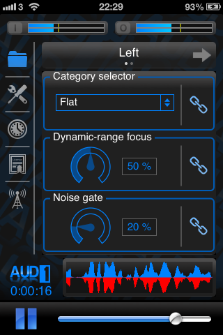

Assistive Hearing Technology
Aud1 is designed to amplify the surrounding environment for the hearing-impaired user, using research-driven processing to enhance comfort and clarity. Aud1 pushes the boundaries of assistive hearing technology on the iOS platform, giving the user fine-grained, yet intuitive control over the sound shaping options. Advanced connectivity options allow the user to mix and match various audio hardware to customize the app to their needs.
|  | The app processes sound received by the microphone in real-time, then delivers the processed sound via headphones. Aud1 is built on the BioAid research algorithm, but provides numerous advanced features that were requested for inclusion in the original app. No other assistive listening software provides the level of user control available in Aud1. |
Aud1 features:
- Dual BioAid algorithm technology, allowing settings for each ear to be adjusted independently.
- Advanced connectivity options, allowing use of high quality audio peripherals to improve sound quality.
- Stereo linkage technology to preserve spatial cues when the app is used with stereo input hardware.
- Fine grain control over the dynamic range of the processed sound.
- High optimization for extremely low processing delay.
- Automatic storage of preferred settings, even if the device runs out of power.
- Adjustable input and output gain controls to fully utilize the dynamic range of the device.
- Detection of accidental removal of headphones, preventing annoying feedback in public places.